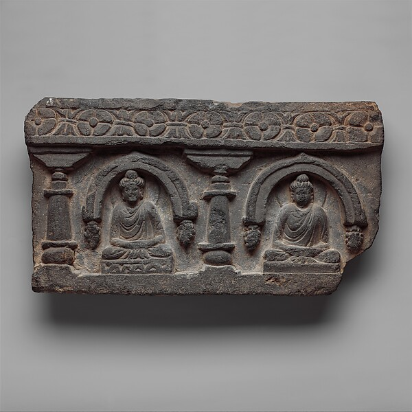

DEEP ARTICLE
パーリ経典
三蔵という巨大な資料群。上座部仏教に伝承された経・律・論の集成で、初期仏教研究の中心資料の一つです。

まず、何を意味するのか
上座部仏教に伝承された経・律・論の集成で、初期仏教研究の中心資料の一つです。
経蔵のニカーヤ、律蔵、論蔵から構成され、成立時期や層位は一様ではありません。
歴史と文脈
経蔵のニカーヤ、律蔵、論蔵から構成され、成立時期や層位は一様ではありません。
仏教用語は時代や学派によって意味の幅が変わります。このページでは、初期仏教・大乗仏教・日本仏教を同じ時代の同一概念として混ぜずに整理します。
よくある誤解
すべてが同時代に成立した一枚岩の文献ではありません。
短い名言やSNS向けの要約だけで理解すると、背景にある実践や思想史が抜け落ちます。言葉だけでなく、その語が使われた文脈を見ることが重要です。
現代の生活でどう読むか
「何が書いてあるか」と同時に、「どの層の資料か」を意識すると読み方が変わります。
仏教の教えは、単に「信じるべき結論」としてではなく、自分の経験を観察するための仮説として読むと実用性が高まります。
DEPTH NOTES
パーリ経典とはをもう一段深く読む
パーリ三蔵は非常に重要ですが、全体が同じ時期に一度に成立したわけではありません。経・律・論の性格と成立層を区別しながら読むことで、資料を絶対化せず活用できます。
他の教えとのつながり
経典は「仏陀の言葉が録音された文書」ではありません。口承・編集・翻訳・伝承という長い過程を経て現在の形になっているため、何が書かれているかだけでなく、どの言語・伝承系統・成立層に属するかを見る必要があります。
同じ教説がパーリ・ニカーヤと漢訳阿含に並行して残る場合、細部が一致しないことがあります。その差は欠陥ではなく、古代の伝承が一枚岩ではなかったことを示す重要な資料です。
実践・読み方のポイント
翻訳を読むときは、できれば複数訳を比べます。「苦」「空」「識」「法」などは日本語一語では意味の幅を完全に再現できません。短い名言ほど、前後の文脈と用語の意味を確かめることが大切です。
経典を信仰対象として読む立場と、歴史資料として読む立場は両立し得ます。このサイトでは宗教的価値を否定せず、同時に成立史や資料批判も隠さない読み方を採用します。